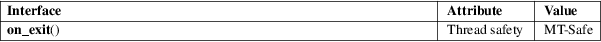

on_exit − register a function to be called at normal process termination
Standard C library (libc, −lc)
#include <stdlib.h>
int on_exit(void (*function)(int, void *), void *arg);
Feature Test Macro Requirements for glibc (see feature_test_macros(7)):
on_exit():
Since glibc 2.19:
_DEFAULT_SOURCE
glibc 2.19 and earlier:
_BSD_SOURCE || _SVID_SOURCE
The on_exit() function registers the given function to be called at normal process termination, whether via exit(3) or via return from the program’s main(). The function is passed the status argument given to the last call to exit(3) and the arg argument from on_exit().
The same function may be registered multiple times: it is called once for each registration.
When a child process is created via fork(2), it inherits copies of its parent’s registrations. Upon a successful call to one of the exec(3) functions, all registrations are removed.
The on_exit() function returns the value 0 if successful; otherwise it returns a nonzero value.
For an explanation of the terms used in this section, see attributes(7).

None.
SunOS 4, glibc. Removed in Solaris (SunOS 5). Use the standard atexit(3) instead.
By the time function is executed, stack (auto) variables may already have gone out of scope. Therefore, arg should not be a pointer to a stack variable; it may however be a pointer to a heap variable or a global variable.
_exit(2), atexit(3), exit(3)